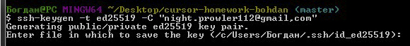
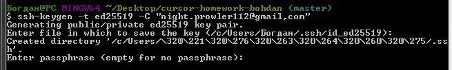
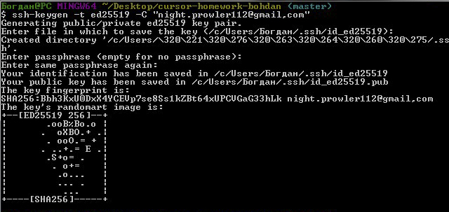
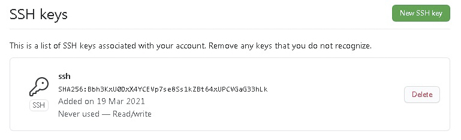

Перелік основних команд GIT
Base
- git config --global user.name blabla — встановлює ім'я, яке буде відібражатися в полі автора у комітів, що ви виконуєте
- git config --global user.email blabal@bla — встановлює адрес електронної пошти, який буде відібражатися в інформації про коміти, що ви виконуєте
- git init — створює новий локальний репозиторій з заданим ім'ям
- git status — вказує всі нові та змінені файли, які треба зафіксувати
- git add — індексує вказаний файл для подальшого коміту
- git commit — фіксує проіндексовані зміни та зберігає їх в історію версій
- git log — історія комітів для поточної гілки
- git checkout — переключає на вибрану гілку та оновлює робочу директорію до її стану
- git branch — перелік іменованих гілок комітів з зазначенням вибраної гілки
- git push — завантажує всі змни локальної гілки у віддалений репозиторій
- git pull — завантажує історію з віддаленого репозиторія та об'єднує її з локальною
- git merge — вностить зміни з гілки віддаленого репозиторія в поточну гілку локального репозиторія
- git clone — завантажує репозиторій разом зі всією історією змін
.gitignore
Файл .gitignore визначає навмисно не відстежувані файли, які Git повинен ігнорувати. Не впливає на файли, які Git вже відстежує.
Advanced
- git revert — скасовує зміни, але не шляхом видалення комітів з історії, а шляхом створення нового коміта з відміненимим змінами
- git reset — скасовує локальні зміни до стану віддаленого репозиторія
- git rebase — переміщує послідовність комітів до нового базового коміту
- git cherry-pick — бере зміни, які внесені в коміт, та застосовує їх повторно у виді нового коміта в поточній гілці
- git stash — зберігає зміни, які будуть виконані пізніше
Підключення GitHub через SSH
-
Перед генерацією SSH-ключа треба перевірити наявніть вже наявних ключів. Для цього виконується команда ls -al ~/.ssh.

-
Для генерації SSH-ключа виконується наступна команда ssh-keygen -t ed25519 -C "your_email@example.com". Задати шлях до файлу, де буде записаний код. Захистити ключ паролем.

-
Отримати згенерований код.

-
Скопіювати код зі збереженого файла та вставити його в поле в налаштуваннях SSH на сайті GitHub.

-
Готово!
